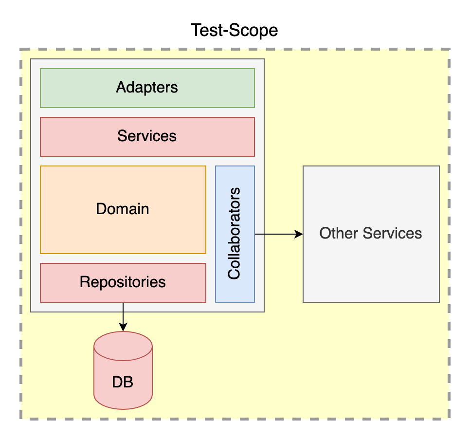
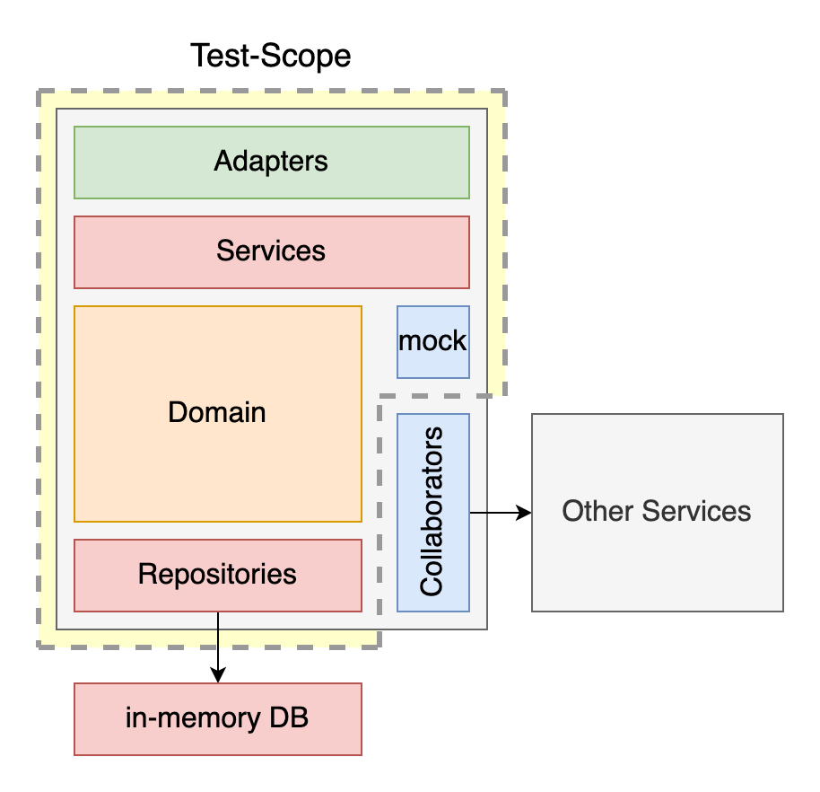
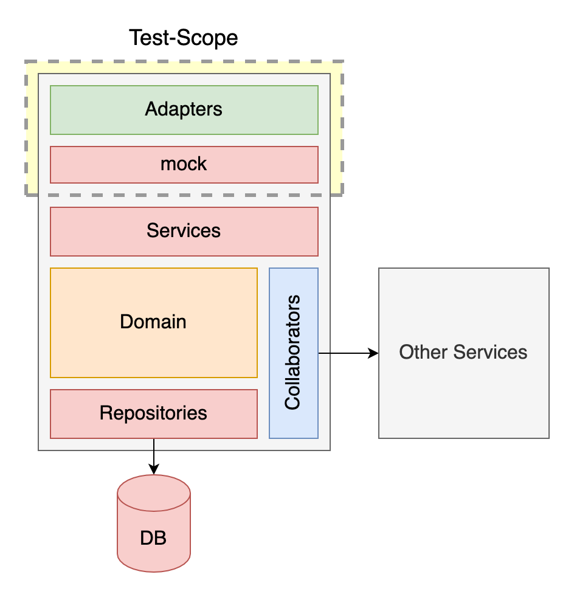

Scope von Provider-Tests
Offene Diskussion: je nachdem was man alles mittesten möchte:
Integration-Test Variante: testen auf Umgebung
- Provider ist auf Umgebung deployt
- Test startet extern über ein Tool (maven-plugin, pact-cli)
- Läuft NICHT als Unit-Test! (nicht zur Build-Zeit)
- State muss über dedizierte REST-Aufrufe gesetzt werden
- ggfs. muss der State aufgeräumt werden
- ggfs. muss Production-Code für Tests geändert werden

Empfehlung: nicht machen.
- Geht in Richtung E2E-Tests: testet viel mehr als nur die Schnittstelle
- Läuft nicht zur Build-Zeit, sondern zur Laufzeit
Unit-Test Variante mit kompletten Service
- Ein Service wird im Unit-Test komplett gestartet (z.B. "@SpringBootTest" oder Arquillian)
- Gemockt werden nur die externen Abhängigkeiten (Clients), bzw. Datenbank (in-memory DB)
- State wird programmatisch in die Datenbank (bzw. Mock) gesetzt
Idee: die Antwort zu einem Call kann von Logik weiter unten im Service abhängen
Siehe: Testing-Scope

Empfehlung: mit Bedacht machen.
- Macht die Tests schwer und langsam
- Testet nicht nur die Schnittstelle, sondern auch Service-Funktionalität
- Macht die Tests brüchig: Bug in der Service-Funktionalität wird als Contract-Bruch ausgewertet
Unit-Test Variante nur mit Schnittstelle
- Ein Service wird im Unit-Test nur mit dem REST-Interface gestartet (z.B. "@WebMvcTest" oder reiner Undertow)
- Gemockt wird die komplette Service-Logik (nur die REST-Klassen werden getestet)
- State wird programmatisch in den Mocks gesetzt
Idee: nur die Schnittstelle testen – kein Contract-Bruch bei einem Fehler in der Service-Logik melden

Empfehlung: gute Wahl in Kombination mit getrennten Service-Tests.
- Tests sind schnell uns stabil
- Testet nur die Schnittstelle, keine Service-Funktionalität und keine Integration
- Getrennte Komponenten-Tests zum Testen von Service-Funktionalität ("@SpringBoot" bzw.
Arquillian etc.)
Provider-Test Aufbau
Ein Provider-Test muss
- Contracts (Pacts) laden und filtern
- Den Service starten (mit dem ausgewählten Scope)
- States setzen können (per Callback für jede Interaction)
- Einen Test ausführen für jede Interaction (per "@TestTemplate" oder ähnliches)
Hinweis: hier gehen wir von einem Unit-Test Scope aus
(mit laufendem Provider auf einer Umgebung werden keine Provider-Unit-Tests geschrieben)
1. Contracts laden und filtern
Vor der Testausführung müssen die zum Provider passenden Contracts geladen werden
- Aus Datei/Verzeichnis ("@PactFolder")
- Aus einer URL ("@PactUrl")
- Aus einem Pact-Broker ("@PactBroker") – siehe: Pact in CI/CD
Damit nur die Interactions berücksichtigt werden, die von der getesteten Service-Klasse bedient werden,
können die Interactions aus den Contracts mit "@PactFilter" gefiltert werden.
Zudem zu berücksichtigen: Konfiguration (Adressen), Authentifizierung, etc.
Beispiel für Spring-Boot (nur Schnittstellen testen)
// No need for full Spring context of @SpringBootTest�
@WebMvcTest�
// Load contracts from PactBroker at localhost:8005�
@PactBroker(host="localhost", port="8005")�
// Load contracts for provider "planets-rest"�
@Provider("planets-rest")�
// Only interactions with path starting with "/planets"�
@PactFilter(value = "^\\/planets.*", filter = �
InteractionFilter.ByRequestPath.class)�
class PlanetsControllerTest {���
2. Service starten
Der Service sollte in der "BeforeAll" Phase gestartet werden, und in der "AfterAll"
Phase gestoppt werden.
Manche Frameworks bieten hier Hilfe an. Zum Beispiel:
- Spring-Boot: "@SpringBootTest" oder "@WebMvcTest"
- Quarkus: "@QuarkusTest" (verwendet aber einen eigenen Classloader, was zu Probleme führt)
Alternativ den Service händisch starten (z.B. mit Jetty oder Undertow)
Beachten: PACT-Mock-Consumer muss die Adresse vom Service kennen (host & port)
Beispiel für Spring-Boot (nur Schnittstellen testen)
// No need for full Spring context of @SpringBootTest�
@WebMvcTest�
// Other PACT/Mockito annotations...�
class PlanetsControllerTest {��
// We will send requests against our MockMvc�
@Autowired�
private MockMvc mockMvc;��
// Tell Pact to fire requests against our MockMvc�
@BeforeEach�
void before(PactVerificationContext context) {�
context.setTarget(new MockMvcTestTarget(mockMvc));�
}
3. States setzen
Bei jeder Interaction (jedem Testlauf) wird ein Callback in der "BeforeEach" Phase mit dem
State-Namen aufgerufen (in Java: Methode mit Annotation "@State").
Dabei muss der Test den State des laufenden Services ändern.
Der State kann direkt in der (ggfs. in-memory) Datenbank oder in Mocks der Daten-Schicht bzw. der
Funktions-Schicht geändert werden.
Beispiel für Spring-Boot
// Mocking our repository out�
@MockBean�
private PlanetsRepository planetsRepository;��
// This gets called when setting state with this name�
@State("i have a list of planets")�
void stateWithPlanets() {�
when(planetsRepository.findAll()).thenReturn(List.of(�
new Planet(1L, "Planet 1"),�
new Planet(2L, "Planet 2"),�
new Planet(3L, "Planet 3")�
));�
}�
4. Test ausführen für jede Interaction
Für jede Interaction muss der Request abgefeuert werden, und die Antwort vom Service geprüft
werden. Meistens genügt hierfür eine "@TestTemplate" Methode.
Beispiel für Spring-Boot
@TestTemplate�
@ExtendWith(PactVerificationInvocationContextProvider.class)�
void pactVerificationTestTemplate(�
PactVerificationContext context) {�
// Trigger interaction and verify result�
context.verifyInteraction();�
}�
Hier wird die Methode für jede Interaction aufgerufen (PactVerificationInvocationContextProvider).
Im PactVerificationContext kann man die Verifizierung vom Mock-Consumer triggern.